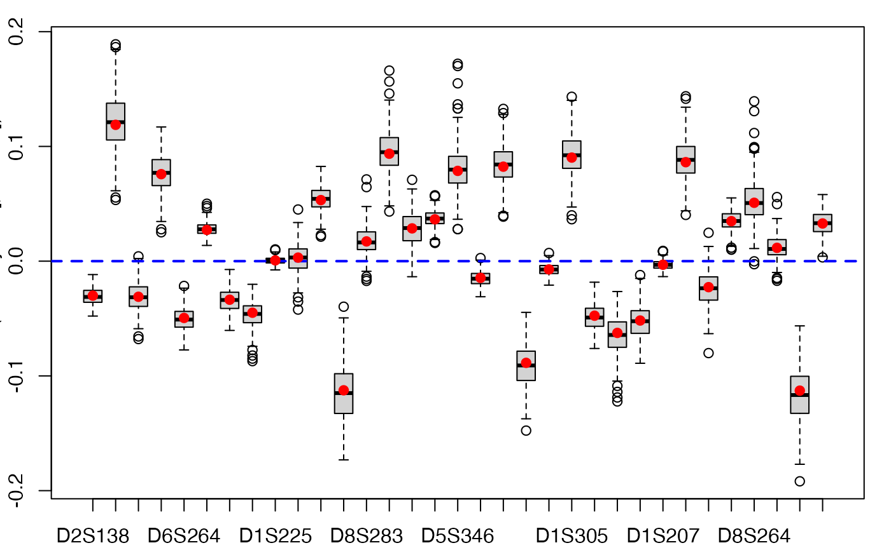
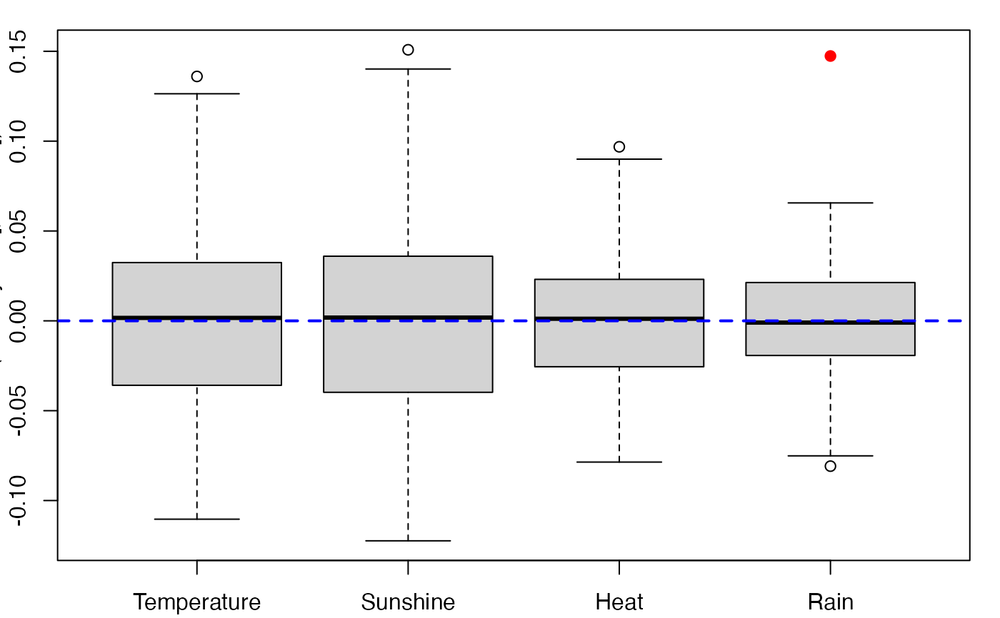
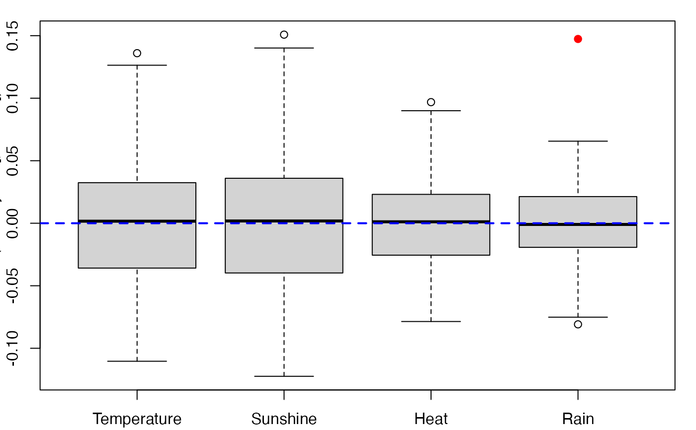

Provides a wrapper for the bootstrap function boot from the
boot R package.
Implements non-parametric bootstraps for PLS
Generalized Linear Regression models by either (Y,X) or (Y,T) resampling.
Usage
bootplsglm(
object,
typeboot = "fmodel_np",
R = 250,
statistic = NULL,
sim = "ordinary",
stype = "i",
stabvalue = 1e+06,
verbose = TRUE,
...
)Arguments
- object
An object of class
plsRglmmodelto bootstrap- typeboot
The type of bootstrap. Either (Y,X) boostrap (
typeboot="plsmodel") or (Y,T) bootstrap (typeboot="fmodel_np"). Defaults to (Y,T) resampling.- R
The number of bootstrap replicates. Usually this will be a single positive integer. For importance resampling, some resamples may use one set of weights and others use a different set of weights. In this case
Rwould be a vector of integers where each component gives the number of resamples from each of the rows of weights.- statistic
A function which when applied to data returns a vector containing the statistic(s) of interest.
statisticmust take at least two arguments. The first argument passed will always be the original data. The second will be a vector of indices, frequencies or weights which define the bootstrap sample. Further, if predictions are required, then a third argument is required which would be a vector of the random indices used to generate the bootstrap predictions. Any further arguments can be passed to statistic through the...argument.- sim
A character string indicating the type of simulation required. Possible values are
"ordinary"(the default),"balanced","permutation", or"antithetic".- stype
A character string indicating what the second argument of
statisticrepresents. Possible values of stype are"i"(indices - the default),"f"(frequencies), or"w"(weights).- stabvalue
A value to hard threshold bootstrap estimates computed from atypical resamplings. Especially useful for Generalized Linear Models.
- verbose
should info messages be displayed ?
- ...
Other named arguments for
statisticwhich are passed unchanged each time it is called. Any such arguments tostatisticshould follow the arguments whichstatisticis required to have for the simulation. Beware of partial matching to arguments ofbootlisted above.
Value
An object of class "boot". See the Value part of the help of
the function boot.
Details
More details on bootstrap techniques are available in the help of the
boot function.
References
A. Lazraq, R. Cleroux, and J.-P. Gauchi. (2003). Selecting both
latent and explanatory variables in the PLS1 regression model.
Chemometrics and Intelligent Laboratory Systems, 66(2):117-126.
P.
Bastien, V. Esposito-Vinzi, and M. Tenenhaus. (2005). PLS generalised linear
regression. Computational Statistics & Data Analysis, 48(1):17-46.
A. C. Davison and D. V. Hinkley. (1997). Bootstrap Methods and Their
Applications. Cambridge University Press, Cambridge.
Author
Frédéric Bertrand
frederic.bertrand@lecnam.net
https://fbertran.github.io/homepage/
Examples
#Imputed aze dataset
data(aze_compl)
Xaze_compl<-aze_compl[,2:34]
yaze_compl<-aze_compl$y
dataset <- cbind(y=yaze_compl,Xaze_compl)
modplsglm <- plsRglm(y~.,data=dataset,3,modele="pls-glm-logistic")
#> ____************************************************____
#> Error in eval(mf, parent.frame(n = sys.nframe())): object 'dataset' not found
library(boot)
# Bastien (Y,T) PLS bootstrap
aze_compl.bootYT <- bootplsglm(modplsglm, R=250, verbose=FALSE)
#> Error: object 'modplsglm' not found
boxplots.bootpls(aze_compl.bootYT)
#> Error: object 'aze_compl.bootYT' not found
confints.bootpls(aze_compl.bootYT)
#> Error: object 'aze_compl.bootYT' not found
plots.confints.bootpls(confints.bootpls(aze_compl.bootYT))
#> Error: object 'aze_compl.bootYT' not found
# \donttest{
# (Y,X) PLS bootstrap
aze_compl.bootYX <- bootplsglm(modplsglm, R=250, verbose=FALSE,
typeboot = "plsmodel")
#> Error: object 'modplsglm' not found
boxplots.bootpls(aze_compl.bootYX)
#> Error: object 'aze_compl.bootYX' not found
confints.bootpls(aze_compl.bootYX)
#> Error: object 'aze_compl.bootYX' not found
plots.confints.bootpls(confints.bootpls(aze_compl.bootYX))
#> Error: object 'aze_compl.bootYX' not found
# (Y,X) PLS bootstrap raw coefficients
aze_compl.bootYX.raw <- bootplsglm(modplsglm, R=250, verbose=FALSE,
typeboot = "plsmodel", statistic=coefs.plsRglm.raw)
#> Error: object 'modplsglm' not found
boxplots.bootpls(aze_compl.bootYX.raw)
#> Error: object 'aze_compl.bootYX.raw' not found
confints.bootpls(aze_compl.bootYX.raw)
#> Error: object 'aze_compl.bootYX.raw' not found
plots.confints.bootpls(confints.bootpls(aze_compl.bootYX.raw))
#> Error: object 'aze_compl.bootYX.raw' not found
plot(aze_compl.bootYT,index=2)
#> Error: object 'aze_compl.bootYT' not found
jack.after.boot(aze_compl.bootYT, index=2, useJ=TRUE, nt=3)
#> Error: object 'aze_compl.bootYT' not found
plot(aze_compl.bootYT, index=2,jack=TRUE)
#> Error: object 'aze_compl.bootYT' not found
aze_compl.tilt.boot <- tilt.bootplsglm(modplsglm, statistic=coefs.plsRglm,
R=c(499, 100, 100), alpha=c(0.025, 0.975), sim="ordinary", stype="i", index=1)
#> Error: object 'modplsglm' not found
# PLS bootstrap balanced
aze_compl.bootYT <- bootplsglm(modplsglm, sim="balanced", R=250, verbose=FALSE)
#> Error: object 'modplsglm' not found
boxplots.bootpls(aze_compl.bootYT)
#> Error: object 'aze_compl.bootYT' not found
confints.bootpls(aze_compl.bootYT)
#> Error: object 'aze_compl.bootYT' not found
plots.confints.bootpls(confints.bootpls(aze_compl.bootYT))
#> Error: object 'aze_compl.bootYT' not found
plot(aze_compl.bootYT)
#> Error: object 'aze_compl.bootYT' not found
jack.after.boot(aze_compl.bootYT, index=1, useJ=TRUE, nt=3)
#> Error: object 'aze_compl.bootYT' not found
plot(aze_compl.bootYT,jack=TRUE)
#> Error: object 'aze_compl.bootYT' not found
aze_compl.tilt.boot <- tilt.bootplsglm(modplsglm, statistic=coefs.plsR,
R=c(499, 100, 100), alpha=c(0.025, 0.975), sim="balanced", stype="i", index=1)
#> Error: object 'modplsglm' not found
# PLS permutation bootstrap
aze_compl.bootYT <- bootplsglm(modplsglm, sim="permutation", R=250, verbose=FALSE)
#> Error: object 'modplsglm' not found
boxplots.bootpls(aze_compl.bootYT)
#> Error: object 'aze_compl.bootYT' not found
plot(aze_compl.bootYT)
#> Error: object 'aze_compl.bootYT' not found
#Original aze dataset with missing values
data(aze)
Xaze<-aze[,2:34]
yaze<-aze$y
library(boot)
modplsglm2 <- plsRglm(yaze,Xaze,3,modele="pls-glm-logistic")
#> ____************************************************____
#> Only naive DoF can be used with missing data
#>
#> Family: binomial
#> Link function: logit
#>
#> ____There are some NAs in X but not in Y____
#> ____Component____ 1 ____
#> ____Component____ 2 ____
#> ____Component____ 3 ____
#> ____Predicting X with NA in X and not in Y____
#> ****________________________________________________****
#>
aze.bootYT <- bootplsglm(modplsglm2, R=250, verbose=FALSE)
boxplots.bootpls(aze.bootYT)

confints.bootpls(aze.bootYT)
#>
#> D2S138 -0.0430836553 -0.015340921 -0.043771063 -0.015915414 -0.0441844214
#> D18S61 0.0703346712 0.162336180 0.071935484 0.165361254 0.0722574935
#> D16S422 -0.0561136431 -0.005347258 -0.059676408 -0.005351559 -0.0567101732
#> D17S794 0.0404155966 0.108741234 0.040233047 0.110770927 0.0408701197
#> D6S264 -0.0680962185 -0.028577392 -0.069099553 -0.029722687 -0.0692416158
#> D14S65 0.0151209602 0.037919094 0.014885696 0.037835120 0.0165886795
#> D18S53 -0.0529741202 -0.012714380 -0.052792663 -0.012743960 -0.0544408234
#> D17S790 -0.0664210755 -0.020405306 -0.066978791 -0.017771732 -0.0721055081
#> D1S225 -0.0052321704 0.006903596 -0.005848025 0.006656162 -0.0052618808
#> D3S1282 -0.0215190769 0.029216212 -0.020660109 0.030001668 -0.0238002947
#> D9S179 0.0307514177 0.073789897 0.030024037 0.075966850 0.0304696746
#> D5S430 -0.1600803249 -0.060188776 -0.160960833 -0.061242429 -0.1638597019
#> D8S283 -0.0077997369 0.040815231 -0.009419890 0.038801333 -0.0043766160
#> D11S916 0.0543333696 0.129008238 0.052515691 0.131501660 0.0557582337
#> D2S159 0.0008913442 0.056595181 0.001222099 0.057318612 -0.0001957766
#> D16S408 0.0214997486 0.049967624 0.021864280 0.050791733 0.0221326483
#> D5S346 0.0324918549 0.120035882 0.026536220 0.118409217 0.0389396103
#> D10S191 -0.0260498302 -0.001849705 -0.025555131 -0.002426571 -0.0266428318
#> D13S173 0.0487962093 0.112221487 0.050937074 0.114705594 0.0499823616
#> D6S275 -0.1217425047 -0.050761661 -0.123803040 -0.052968251 -0.1242459020
#> D15S127 -0.0167795889 0.002720454 -0.017198824 0.002686720 -0.0170748538
#> D1S305 0.0523651314 0.124929667 0.051790245 0.129158702 0.0513609110
#> D4S394 -0.0677457113 -0.024550754 -0.068279579 -0.025700358 -0.0693585009
#> D20S107 -0.0931339901 -0.027553803 -0.094408687 -0.024102508 -0.1009376191
#> D1S197 -0.0792352128 -0.022228397 -0.078992924 -0.023114482 -0.0803608213
#> D1S207 -0.0110540044 0.005098099 -0.011232542 0.004724430 -0.0109319960
#> D10S192 0.0510075345 0.117768568 0.051111694 0.120177155 0.0523369378
#> D3S1283 -0.0518113997 0.009568615 -0.050095200 0.012528410 -0.0578427865
#> D4S414 0.0167537293 0.052187501 0.016255411 0.053599865 0.0161042221
#> D8S264 0.0098750699 0.088319094 0.004673021 0.086606529 0.0151475916
#> D22S928 -0.0090243311 0.031195079 -0.010445549 0.029430211 -0.0062160652
#> TP53 -0.1562103856 -0.063107294 -0.157693133 -0.067116796 -0.1585481284
#> D9S171 0.0118482350 0.053605259 0.011508865 0.052591819 0.0130947554
#>
#> D2S138 -0.016328772 -0.0418841999 -1.512330e-02
#> D18S61 0.165683264 0.0654056966 1.574272e-01
#> D16S422 -0.002385324 -0.0547943467 -6.250634e-05
#> D17S794 0.111407999 0.0399341623 1.091797e-01
#> D6S264 -0.029864749 -0.0667002622 -2.529991e-02
#> D14S65 0.039538103 0.0146820695 3.706730e-02
#> D18S53 -0.014392120 -0.0525625573 -1.434752e-02
#> D17S790 -0.022898448 -0.0651740801 -2.109078e-02
#> D1S225 0.007242307 -0.0050933601 7.679490e-03
#> D3S1282 0.026861482 -0.0235184949 2.687434e-02
#> D9S179 0.076412487 0.0297923155 7.313882e-02
#> D5S430 -0.064141298 -0.1619354568 -5.565190e-02
#> D8S283 0.043844606 -0.0001397147 4.732440e-02
#> D11S916 0.134744202 0.0508036923 1.271264e-01
#> D2S159 0.055900736 -0.0004940934 5.563520e-02
#> D16S408 0.051060101 0.0205076146 4.915675e-02
#> D5S346 0.130812607 0.0372828145 1.201410e-01
#> D10S191 -0.003514272 -0.0252945910 -5.309125e-04
#> D13S173 0.113750882 0.0418838726 1.088635e-01
#> D6S275 -0.053411113 -0.1202950936 -4.727772e-02
#> D15S127 0.002810690 -0.0169041296 3.220130e-03
#> D1S305 0.128729368 0.0488549040 1.237695e-01
#> D4S394 -0.026779280 -0.0662829853 -2.375609e-02
#> D20S107 -0.030631441 -0.0909686262 -2.761123e-02
#> D1S197 -0.024482379 -0.0790658141 -2.365270e-02
#> D1S207 0.005024976 -0.0107419547 5.079784e-03
#> D10S192 0.121402399 0.0461171988 1.150375e-01
#> D3S1283 0.004780823 -0.0536085037 1.185818e-02
#> D4S414 0.053448676 0.0150836678 5.329205e-02
#> D8S264 0.097081099 0.0159201759 9.835832e-02
#> D22S928 0.033659695 -0.0027651887 3.635174e-02
#> TP53 -0.067971792 -0.1548235948 -6.044448e-02
#> D9S171 0.054177710 0.0077360617 5.363401e-02
#> attr(,"typeBCa")
#> [1] TRUE
plots.confints.bootpls(confints.bootpls(aze.bootYT))
 #Ordinal logistic regression
data(bordeaux)
Xbordeaux<-bordeaux[,1:4]
ybordeaux<-factor(bordeaux$Quality,ordered=TRUE)
dataset <- cbind(y=ybordeaux,Xbordeaux)
options(contrasts = c("contr.treatment", "contr.poly"))
modplsglm3 <- plsRglm(ybordeaux,Xbordeaux,1,modele="pls-glm-polr")
#> ____************************************************____
#>
#> Model: pls-glm-polr
#> Method: logistic
#>
#> ____Component____ 1 ____
#> ____Predicting X without NA neither in X nor in Y____
#> ****________________________________________________****
#>
bordeaux.bootYT<- bootplsglm(modplsglm3, sim="permutation", R=250, verbose=FALSE)
boxplots.bootpls(bordeaux.bootYT)

boxplots.bootpls(bordeaux.bootYT,ranget0=TRUE)
#Ordinal logistic regression
data(bordeaux)
Xbordeaux<-bordeaux[,1:4]
ybordeaux<-factor(bordeaux$Quality,ordered=TRUE)
dataset <- cbind(y=ybordeaux,Xbordeaux)
options(contrasts = c("contr.treatment", "contr.poly"))
modplsglm3 <- plsRglm(ybordeaux,Xbordeaux,1,modele="pls-glm-polr")
#> ____************************************************____
#>
#> Model: pls-glm-polr
#> Method: logistic
#>
#> ____Component____ 1 ____
#> ____Predicting X without NA neither in X nor in Y____
#> ****________________________________________________****
#>
bordeaux.bootYT<- bootplsglm(modplsglm3, sim="permutation", R=250, verbose=FALSE)
boxplots.bootpls(bordeaux.bootYT)

boxplots.bootpls(bordeaux.bootYT,ranget0=TRUE)
 bordeaux.bootYT2<- bootplsglm(modplsglm3, sim="permutation", R=250,
strata=unclass(ybordeaux), verbose=FALSE)
boxplots.bootpls(bordeaux.bootYT2,ranget0=TRUE)
bordeaux.bootYT2<- bootplsglm(modplsglm3, sim="permutation", R=250,
strata=unclass(ybordeaux), verbose=FALSE)
boxplots.bootpls(bordeaux.bootYT2,ranget0=TRUE)
 if(require(chemometrics)){
data(hyptis)
hyptis
yhyptis <- factor(hyptis$Group,ordered=TRUE)
Xhyptis <- as.data.frame(hyptis[,c(1:6)])
dataset <- cbind(y=yhyptis,Xhyptis)
options(contrasts = c("contr.treatment", "contr.poly"))
modplsglm4 <- plsRglm(yhyptis,Xhyptis,3,modele="pls-glm-polr")
hyptis.bootYT3<- bootplsglm(modplsglm4, sim="permutation", R=250, verbose=FALSE)
rownames(hyptis.bootYT3$t0)<-c("Sabi\nnene","Pin\nene",
"Cine\nole","Terpi\nnene","Fenc\nhone","Terpi\nnolene")
boxplots.bootpls(hyptis.bootYT3)
boxplots.bootpls(hyptis.bootYT3,xaxisticks=FALSE)
boxplots.bootpls(hyptis.bootYT3,ranget0=TRUE)
boxplots.bootpls(hyptis.bootYT3,ranget0=TRUE,xaxisticks=FALSE)
}
#> Loading required package: chemometrics
#> Warning: there is no package called ‘chemometrics’
# }
if(require(chemometrics)){
data(hyptis)
hyptis
yhyptis <- factor(hyptis$Group,ordered=TRUE)
Xhyptis <- as.data.frame(hyptis[,c(1:6)])
dataset <- cbind(y=yhyptis,Xhyptis)
options(contrasts = c("contr.treatment", "contr.poly"))
modplsglm4 <- plsRglm(yhyptis,Xhyptis,3,modele="pls-glm-polr")
hyptis.bootYT3<- bootplsglm(modplsglm4, sim="permutation", R=250, verbose=FALSE)
rownames(hyptis.bootYT3$t0)<-c("Sabi\nnene","Pin\nene",
"Cine\nole","Terpi\nnene","Fenc\nhone","Terpi\nnolene")
boxplots.bootpls(hyptis.bootYT3)
boxplots.bootpls(hyptis.bootYT3,xaxisticks=FALSE)
boxplots.bootpls(hyptis.bootYT3,ranget0=TRUE)
boxplots.bootpls(hyptis.bootYT3,ranget0=TRUE,xaxisticks=FALSE)
}
#> Loading required package: chemometrics
#> Warning: there is no package called ‘chemometrics’
# }